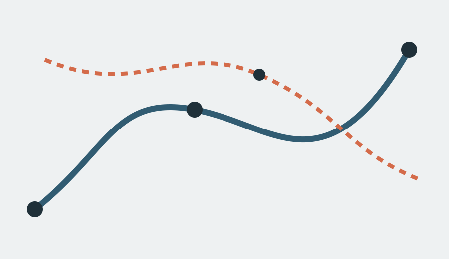

MUSEUM FIKTIFKarya, tempat, agenda dan tiket merupakan contoh. Tidak ada pemesanan kunjungan.
RUANG SELA / VISIT
Visit
Rencanakan kunjungan dengan ritme yang sesuai.
Datang dengan waktu.
Ruang Sela berada di koridor budaya kota. Tiket demo berlaku sebagai reservasi waktu, bukan bukti pembayaran nyata.
Concept Website — informasi alamat dan harga di bawah adalah simulasi portofolio.
Pilih slot kunjungan ↗
Peta orientasi / pintu masuk selatan